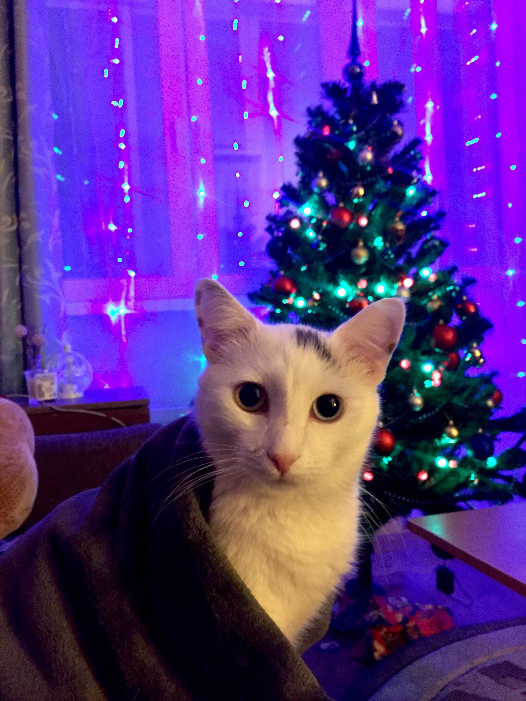
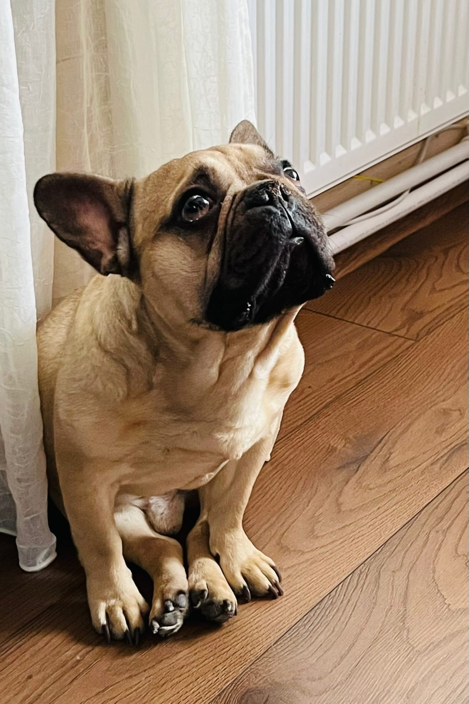
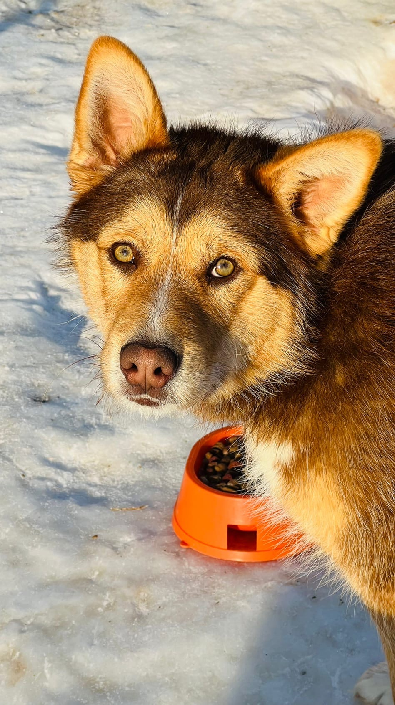

Мои питомцы
- Кот Федя
- Французский бульдог Бостон
- Уличный пёс Харли
Федя

У феди редкая генетическая аномалия, которая называется гетерохромия. Данное состояние проявляется разным цветом глаз.
Люди тоже могут страдать данным заболеванием, оно называется Синдром Ваарденбурга.
Бостон

Бостон - французский бульдог. Бостон с виду милый, но на самом деле тот еще истеричка. Он любит находиться в компании хозяина, лучше не оставлять его одного, иначе после возвращения домой можно обнаружить множество сюрпризов
Харли

Харли - уличный сторожевой пес. Гроза нашего райна. Все собаки при виде него поджимают хвосты. Но на самом деле он душечка